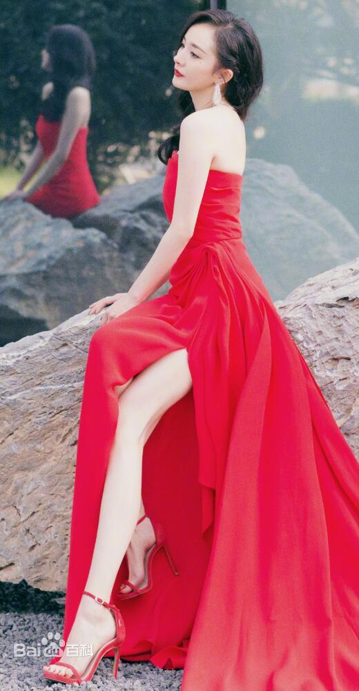
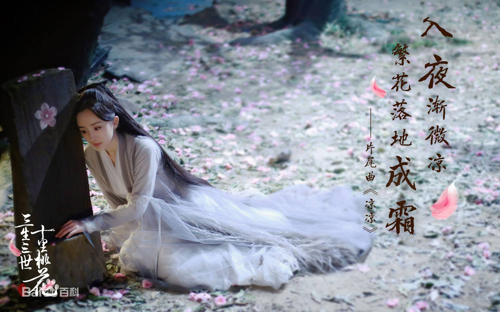

杨幂
杨幂，1986年9月12日出生于北京市，中国内地影视女演员、流行乐歌手、影视制片人。
重要事件
- 2005年，杨幂进入北京电影学院表演系本科班就读。
- 2006年，杨幂因出演金庸武侠剧《神雕侠侣》而崭露头角。
-
2008年，她凭借古装剧《王昭君》获得了第24届中国电视金鹰奖观众喜爱的电视剧女演员奖提名。
-
2009年，杨幂在“80后新生代娱乐大明星”评选活动中与其她三位女演员共同被评为“四小花旦”。
-
2011年，杨幂凭借穿越剧《宫锁心玉》赢得广泛关注，并获得了第17届上海电视节白玉兰奖观众票选最具人气女演员奖。
-
2012年，杨幂工作室成立，而她则凭借都市剧《北京爱情故事》相继获得第9届金鹰电视艺术节最具人气女演员奖、第26届中国电视金鹰奖观众喜爱的电视剧女演员奖提名。
-
2016年，其主演的职场剧《亲爱的翻译官》取得全国年度电视剧收视冠军 。
-
2017年，杨幂主演的神话剧《三生三世十里桃花》获得颇高关注；同年，她还凭借科幻片《逆时营救》获得休斯顿国际电影节最佳女主角奖。
-
2018年，杨幂凭借《绣春刀Ⅱ：修罗战场》获得北京大学生电影节最受大学生欢迎女演员奖；同年，她还获得了第5届中国电视好演员绿宝石女演员奖。
成就和荣誉
- 2019,中国扶贫基金会“2018年度捐赠人突出贡献”
-
2019,中国扶贫基金会“致敬三十年三十人—同行者”
-
2018,中国社会福利基金会年度爱心个人奖
- 2013,第3届“明星公民暨金牌推手”颁奖盛典“年度明星公民”
主要作品
| 年份 |
電視劇 |
| 2003年 |
唐明皇 |
| 2004年 |
红粉世家 |
| 2005年 |
天和局 |
| 2006年 |
神雕侠侣 |
| 2007年 |
王昭君 |
| 2008年 |
上书房 |
| 2009年 |
仙剑奇侠传三 |
| 2010年 |
神探狄仁杰前传 |
| 2011年 |
宫 |
| 2012年 |
北京爱情故事 |
| 2016年 |
亲爱的翻译官 |
| 2017年 |
三生三世十里桃花 |
| 2020年 |
三生三世枕上书 |
生活照


生平
1990年，当时她正参加小演员培训班，刚好陈家林导演的《唐明皇》剧组来挑演员，4岁的杨幂幸运地被挑上了，并出演了剧中的咸宜公主
，该剧则在播出后获得了第11届“金鹰奖”优秀长篇连续剧奖、第13届“飞天奖”长篇特等奖。次年，5岁的杨幂又在香港动作喜剧片《武状元苏乞儿》中饰演了男主角苏灿（周星驰饰演）的女儿。
1992年，杨幂与六小龄童合作主演了戏曲题材儿童剧《猴娃》，此剧在播出后则获得了第十四届“飞天奖”少儿电视连续剧二等奖，而只有6岁的她也给该剧的制片人李小婉留下了深刻的印象。
1993年，杨幂在李丹阳的《穿军装的川妹子》MV中饰演小李丹阳，而该作品则荣获了首届中国音乐电视大赛金奖。1996年，她还在何晴、李亚鹏出演的青春电影《歌手》中饰演了小夏表妹的角色。